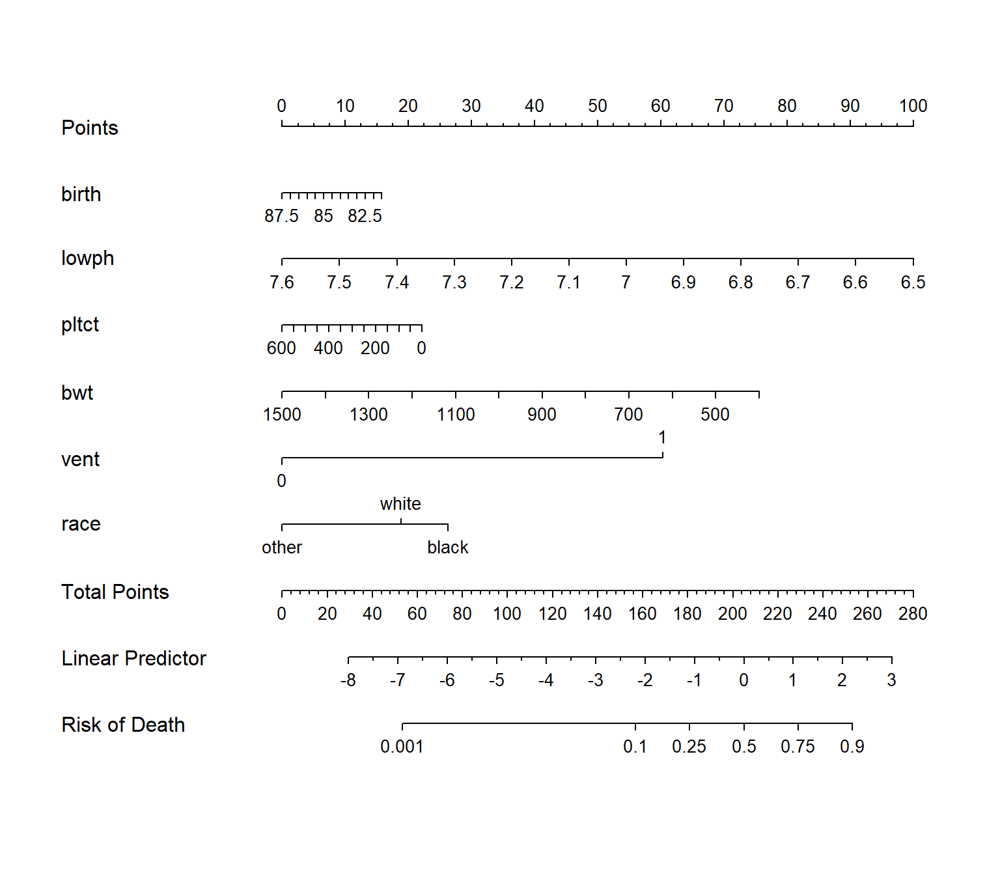

install.packages("rms")
install.packages("DynNom")
install.packages("regplot")
devtools::install_local("D:/R/R包/VRPM_1.2.tar.gz") # 需要下载压缩包本地安装2 logistic回归列线图绘制
列线图（Alignment Diagram），又称诺莫图（Nomogram图），用来把多因素回归分析结果（logistic回归和cox回归）用图形方式表现出来，将多个预测指标进行整合，然后采用带有刻度的线段，按照一定的比例绘制在同一平面上，从而用以表达预测模型中各个变量之间的相互关系。
根据模型中各个影响因素对结局变量的贡献程度（回归系数的大小），给每个影响因素的每个取值水平进行赋分，然后再将各个评分相加得到总评分，最后通过总评分与结局事件发生概率之间的函数转换关系，从而计算出该个体结局事件的预测值。
简单地说，就是把你的模型用图形化的方式展示出来。
列线图无论是在单纯的临床预测模型类文章、还是和生信数据挖掘结合的预测模型类文章中，都是标配。
下面给大家介绍4种logistic回归列线图的绘制方法。
2.1 准备R包和数据
使用lowbirth数据集，这个数据集是关于低出生体重儿是否会死亡的数据集，其中dead这一列是结果变量，0代表存活，1代表死亡，其余列都是预测变量。
注意：需要把分类变量因子化，对于无序分类变量，需要设置哑变量！
rm(list = ls())
lowbirth <- read.csv("./datasets/lowbirth.csv")查看一下数据：
dim(lowbirth) # 565行，10列
## [1] 565 10
str(lowbirth)
## 'data.frame': 565 obs. of 10 variables:
## $ birth : num 81.5 81.6 81.6 81.6 81.6 ...
## $ lowph : num 7.25 7.06 7.25 6.97 7.32 ...
## $ pltct : int 244 114 182 54 282 153 229 182 361 378 ...
## $ race : chr "white" "black" "black" "black" ...
## $ bwt : int 1370 620 1480 925 1255 1350 1310 1110 1180 970 ...
## $ delivery: chr "abdominal" "vaginal" "vaginal" "abdominal" ...
## $ apg1 : int 7 1 8 5 9 4 6 6 6 2 ...
## $ vent : int 0 1 0 1 0 0 1 0 0 1 ...
## $ sex : chr "female" "female" "male" "female" ...
## $ dead : int 0 1 0 1 0 0 0 0 0 1 ...简单的把人种分为白色和黑色人种（无序分类变量需要设置哑变量），再去掉race这一列，然后其余分类变量因子化。
library(dplyr)
tmp <- lowbirth %>%
mutate(across(where(is.character),as.factor),
vent = factor(vent),
black = ifelse(race == "black",1,0),
white = ifelse(race == "white",1,0),
other = ifelse(race %in% c("native American","oriental"),1,0)
) %>%
select(- race)
glimpse(tmp)
## Rows: 565
## Columns: 12
## $ birth <dbl> 81.514, 81.552, 81.558, 81.593, 81.610, 81.624, 81.626, 81.68…
## $ lowph <dbl> 7.250000, 7.059998, 7.250000, 6.969997, 7.320000, 7.160000, 7…
## $ pltct <int> 244, 114, 182, 54, 282, 153, 229, 182, 361, 378, 255, 186, 26…
## $ bwt <int> 1370, 620, 1480, 925, 1255, 1350, 1310, 1110, 1180, 970, 770,…
## $ delivery <fct> abdominal, vaginal, vaginal, abdominal, vaginal, abdominal, v…
## $ apg1 <int> 7, 1, 8, 5, 9, 4, 6, 6, 6, 2, 4, 8, 1, 8, 5, 9, 9, 9, 6, 2, 1…
## $ vent <fct> 0, 1, 0, 1, 0, 0, 1, 0, 0, 1, 1, 0, 1, 1, 0, 1, 0, 0, 1, 0, 1…
## $ sex <fct> female, female, male, female, female, female, male, male, mal…
## $ dead <int> 0, 1, 0, 1, 0, 0, 0, 0, 0, 1, 0, 0, 0, 0, 0, 0, 0, 0, 1, 0, 0…
## $ black <dbl> 0, 1, 1, 1, 1, 1, 0, 1, 0, 0, 1, 0, 1, 0, 0, 1, 0, 1, 1, 1, 0…
## $ white <dbl> 1, 0, 0, 0, 0, 0, 1, 0, 1, 1, 0, 1, 0, 1, 1, 0, 1, 0, 0, 0, 1…
## $ other <dbl> 0, 0, 0, 0, 0, 0, 0, 0, 0, 0, 0, 0, 0, 0, 0, 0, 0, 0, 0, 0, 0…2.2 方法1：rms
library(rms)
## Loading required package: Hmisc
##
## Attaching package: 'Hmisc'
## The following objects are masked from 'package:dplyr':
##
## src, summarize
## The following objects are masked from 'package:base':
##
## format.pval, units
## Warning in .recacheSubclasses(def@className, def, env): undefined subclass
## "ndiMatrix" of class "replValueSp"; definition not updated然后是打包数据，这一步对于rms包来说是必须的：
dd <- datadist(tmp)
options(datadist="dd")构建模型：
fit1 <- lrm(dead ~ birth + lowph + pltct + bwt + delivery + apg1 +
vent + sex + black + white,
data = tmp,x=T,y=T)接下来就是构建列线图模型，然后画图。
nom1 <- nomogram(fit1, fun=plogis,
fun.at=c(0.001,0.1,0.25,0.5,0.75,0.9,0.99),
lp=T, # 是否显示线性概率
funlabel="Risk of Death")
plot(nom1) 
从这个图来看，sex、delivery、apg1对模型的贡献很小，几乎可以忽略不计，下面我们去掉这两个变量再看看。
fit2 <- lrm(dead ~ birth + lowph + pltct + bwt + vent + black + white,
data = tmp,x=T,y=T)
nom2 <- nomogram(fit2, fun=plogis,
fun.at=c(0.001,0.01,0.1,0.25,0.5,0.75,0.9,0.99),
lp=T,
maxscale = 100, # 最大得分数
conf.int = F, # 添加置信区间，很难看，可以不要
funlabel="Dead")
plot(nom2,
col.grid=c("tomato","grey")
#conf.space = c(0.3,0.5) # 置信区间位置
) 
2.3 方法2：DynNom
使用这种方法会在你的Rstudio中弹出一个窗口，你可以自由调节其中给出的选项。
library(DynNom)
fit2 <- glm(dead ~ birth + lowph + pltct + bwt + vent + black + white,
data = tmp, family = binomial)
DynNom(fit2,DNtitle = "nomogram",DNxlab = "probability")选择好你的参数，点击Predict即可出图：

注意
仔细看上面这个图其实有错误，black和white作为性别，只有2种可能，不可能为小数，这就提醒我们在建立模型时需要把这样的变量先因子化。
2.4 方法3：regplot
library(regplot)
fit2 <- lrm(dead ~ birth + lowph + pltct + bwt + vent + black + white,
data = tmp,x=T,y=T)
regplot(fit2,
#连续性变量形状，"no plot""density""boxes""ecdf"
#"bars""boxplot""violin""bean" "spikes"；
#分类变量的形状，可选"no plot" "boxes" "bars" "spikes"
plots = c("violin", "boxes"),
observation = tmp[1,], #用哪行观测，或者T F
center = T, # 对齐变量
subticks = T,
droplines = T,#是否画竖线
title = "nomogram",
points = T, # 截距项显示为0-100
odds = T, # 是否显示OR值
showP = T, # 是否显示变量的显著性标记
rank = "sd", # 根据sd给变量排序
interval="confidence", # 展示可信区间
clickable = F # 是否可以交互
)
## Regression fit2 lrm formula:
## dead `~` birth + lowph + pltct + bwt + vent + black + white
## CI: 0.00496(0.00106,0.0233)
## [[1]]
## white Points
## 1 0.0 26
## 2 0.4 34
## 3 0.8 42
##
## [[2]]
## black Points
## 1 0.0 17
## 2 0.4 29
## 3 0.8 40
##
## [[3]]
## vent Points
## vent1 0 34
## vent2 1 99
##
## [[4]]
## bwt Points
## 1 400 87
## 2 600 72
## 3 800 57
## 4 1000 42
## 5 1200 27
## 6 1400 12
##
## [[5]]
## pltct Points
## 1 0 42
## 2 300 30
## 3 600 18
##
## [[6]]
## lowph Points
## 1 6.5 103
## 2 6.6 93
## 3 6.7 83
## 4 6.8 74
## 5 6.9 64
## 6 7.0 54
## 7 7.1 44
## 8 7.2 34
## 9 7.3 25
## 10 7.4 15
## 11 7.5 5
## 12 7.6 -5
##
## [[7]]
## birth Points
## 1 81.5 43
## 2 84.5 34
## 3 87.5 26
##
## [[8]]
## Total Points Pr( )
## 1 100 3.798e-05
## 2 150 3.144e-04
## 3 200 2.598e-03
## 4 250 2.112e-02
## 5 300 1.516e-01
## 6 350 5.967e-01
## 7 400 9.245e-01
## 8 450 9.902e-01
2.5 方法4：VRPM
library(VRPM)
fit2 <- glm(dead ~ birth + lowph + pltct + bwt + vent + black + white,
data = tmp, family = binomial)
# 图片保存在你的目录下
colplot(fit2,coloroptions = 3)
以上就是4种Cox回归列线图绘制的方法，其中方法1和3是最常用的。
获取lowbirth数据请在公众号：医学和生信笔记 后台回复20220520。